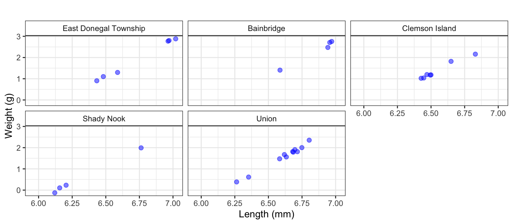

Introduction to R
PACFWRU, Penn State University
2024-01-15
An Introduction to

What is R?
R is an environment for statistical computing and graphics
Widely used in scientific and quantitative research
Freely available and has extensive functionality
Background on R and documentation can be found on the R Project website https://www.r-project.org/
RStudio IDE
An integrated development environment (IDE) for R
Allows you to organize your work into projects, create documents, presentations, webpages, etc. (this presentation was made using RStudio)
You will want to download and install the latest versions of R and RStudio
Other resources
Google
R-bloggers: a blog aggregator of content contributed by bloggers who write about R; https://www.r-bloggers.com/
Stackoverflow: a public platform for asking questions and finding answers related to R; https://stackoverflow.com/questions/tagged/r
R packages üì¶
The base installation of R includes many functions and commands
However, you will need to access additional functionality encoded into packages contributed by the R developer community
R packages üì¶
- Can download directly from within RStudio
- Contain help files and often include data and examples
- Downloaded from CRAN (Comprehensive R Archive Network)
R packages üì¶
Can also download from the R console
Some packages are only available to download from GitHub - a large platform for programmers to store and share code. Install instructions will often be provided on the GitHub landing page, but will often be something like:
Some useful R packages to get started with:
library(dplyr) # data management
library(tidyverse) # data workflow
library(ggplot2) # plotting: both figures and maps
library(lubridate) # working with dates
library(bslib) # a modern UI toolkit for Shiny and R Markdown
library(stringr) # manipulate character stings
library(sf) # map creation, works with ggplot
library(spData) # spatial data
library(car) # logit functionUsing R packages
- You only need to download R packages once, but you need to ‘load’ them in each R session that you work on
To load R packages you simply use the library function with the name of the R package in parentheses:
It is good practice to load all your R packages at the very beginning of your R script
Unlocking the power of R üîê
- Basic computation
Executing simple base functions
The Assignment Operator: <-
- Assigns values to an object (data class)
An object can be:
Numerical value
Data set (data frame)
Vector, matrix, array
Function
Model output
List
The Assignment Operator: <-
Note that R is case sensitive: y ⧣ Y
Created objects can be used in other operations and to define new objects
These new objects can be used in functions
R object types (data classes)
Vectors and Arrays
Vector: a one-dimensional array, all elements of a vector must be of the same type (numerical or character)
Matrix: a two-dimensional array with rows and columns (numeric or character)
Array: as a matrix, but of arbitrary dimension
Vectors and Arrays
We can apply operations and functions to each element of an R object, such as a vector
[1] 115 226 305 95 445[1] 4.74 5.42 5.72 4.55 6.10We can also apply functions or operations to the entire vector
Vectors and Arrays
We can easily subset vectors and arrays using subscripts []
Vectors and Arrays
Let’s do the same for a 2-D array (a matrix)
# Create a matrix of random numbers
set.seed(1234) # set a seed so we get the same random numbers each time we run this
mymatrix <- matrix(rnorm(15), nrow = 5, ncol = 3)
mymatrix [,1] [,2] [,3]
[1,] -1.2070657 0.5060559 -0.47719270
[2,] 0.2774292 -0.5747400 -0.99838644
[3,] 1.0844412 -0.5466319 -0.77625389
[4,] -2.3456977 -0.5644520 0.06445882
[5,] 0.4291247 -0.8900378 0.95949406[1] -1.2070657 0.2774292 1.0844412 -2.3456977 0.4291247Vectors and Arrays
Let’s do the same for a 2-D array (a matrix)
[,1] [,2]
[1,] -1.2070657 -0.47719270
[2,] 0.2774292 -0.99838644
[3,] 1.0844412 -0.77625389
[4,] -2.3456977 0.06445882
[5,] 0.4291247 0.95949406[1] -1.2070657 0.5060559 -0.4771927 [,1] [,2]
[1,] -1.2070657 -0.4771927
[2,] 0.2774292 -0.9983864Vectors and Arrays
We can do the same for character values
[1] "Round lake" "Deep Lake" We can use logical values in subsetting too
R object types
Data frames
2-D array like structure (rows and columns)
Similar to a spreadsheet of data
Can be a mix of variable types (some columns numeric and some character or date, etc.)
The fundamental data structure by most of R’s modeling functions
Typically we read data from a .txt or .csv file into a data frame object for analysis, plotting, etc.
R object types
List: R objects which contain elements of different types, including vectors, arrays, data frames, etc.
mylist <- list(c("Brook trout","Smallmouth bass","Flathead catfish"), matrix(rnorm(10), nrow = 5, ncol=2),
c(as.Date("2023-01-31"), as.Date("2021-05-21")))
mylist[[1]]
[1] "Brook trout" "Smallmouth bass" "Flathead catfish"
[[2]]
[,1] [,2]
[1,] -0.1102855 0.1340882
[2,] -0.5110095 -0.4906859
[3,] -0.9111954 -0.4405479
[4,] -0.8371717 0.4595894
[5,] 2.4158352 -0.6937202
[[3]]
[1] "2023-01-31" "2021-05-21"Getting started: creating R Projects
R projects are a useful way to organize your R projects
All files (R scripts, data, functions, etc.) are located in a single project folder
Facilitates Open Science and sharing of code
Facilitates interacting with GitHub (for version control and collaboration)
Allows for the creation of other products: presentations, documents, books, etc.
Creating R projects
- Create a project by:
File➡️New Project...
Creating R projects
Creating R projects
Creating R projects
- Also useful to do the following:
Tools➡️Global Options...uncheck these boxes
R projects
Organize your R projects with relevant directories üìÇ
scripts
data
figures
model_output
etc.
R projects - organize
R scripts
- You will forget why you did what you did and/or what you did…and it’s frustrating!

R scripts
Organization and comments are important
Comments are added after hash mark
#
- Load packages at the top of the script
Create R scripts
File➡️New File➡️R ScriptSave file with descriptive name in the appropriate project directory
- You are now ready to start using R!
Importing data
There are several functions that can be used to import data
Data: spreadsheets (flat tables), spatial data (shapefiles, rasters)
Can be many different formats:
.txt,.csv,.rds,feather, etc.
Typically, we read in data as
.csvfilesA useful function for reading in
.csvfiles is tidyverse::read_csv
Import example data üêü
fhc_dat <- read_csv('../02_data/FHC_length_weigtht.csv')
str(fhc_dat) # display structure of R objectspc_tbl_ [38 × 7] (S3: spec_tbl_df/tbl_df/tbl/data.frame)
$ Date : chr [1:38] "7/12/22" "7/14/22" "7/14/22" "7/14/22" ...
$ Fish ID : chr [1:38] "sus-235" "sus-236" "sus-237" "sus-238" ...
$ Site : chr [1:38] "Clemson Island" "Clemson Island" "Clemson Island" "Clemson Island" ...
$ Length (mm) : num [1:38] 820 645 925 618 630 665 772 661 385 387 ...
$ Weight (kg) : num [1:38] NA 3.31 8.67 2.78 2.82 3.26 6.17 3.24 NA NA ...
$ Fin Clip ( Y or N ) : chr [1:38] "Y" "Y" "Y" "Y" ...
$ Liver/Muscle (Y or N): chr [1:38] "Y" "Y" "Y" "Y" ...
- attr(*, "spec")=
.. cols(
.. Date = col_character(),
.. `Fish ID` = col_character(),
.. Site = col_character(),
.. `Length (mm)` = col_double(),
.. `Weight (kg)` = col_double(),
.. `Fin Clip ( Y or N )` = col_character(),
.. `Liver/Muscle (Y or N)` = col_character()
.. )
- attr(*, "problems")=<externalptr> Pipe operator in R %>% or |>
%>%is a pipe operator provided by the magrittr magrittr package|>is a simple native forward pipe syntaxDifferences between these can be found here and here
- A few differences are: using
|>uses one less package,|>might be faster computationally, to most of us the differences are negligible and the choice is yours
- A few differences are: using
We will use
%>%
Pipes
- We always need to perform data manipulations after importing data into R
Data manipulations require several steps
Subset data
- Select/remove certain observations, rows, columns
Change a data type (e.g., numeric, character, factor, etc.)
Transform data (e.g., log-transform)
Pipe operator in R %>%
You can do these steps one at a time, but we can more efficiently “chain” these steps together - where the intermediate result from one function is passed into the next function
Pipes help increase the readability of your code
Easily add steps anywhere along the chain sequence
Pipe operator in R %>%
- Pipe basics
[1] 2.366423[1] 2.366423The log function takes a single argument (in this case, x), but we can see how pipes are used for functions that take more than one argument
Pipe operator in R %>%
- The round function takes two arguments: round(x, digits=0)
Back to our data
# A tibble: 3 × 7
Date `Fish ID` Site `Length (mm)` `Weight (kg)` `Fin Clip ( Y or N )`
<chr> <chr> <chr> <dbl> <dbl> <chr>
1 7/12/22 sus-235 Clemson I… 820 NA Y
2 7/14/22 sus-236 Clemson I… 645 3.31 Y
3 7/14/22 sus-237 Clemson I… 925 8.67 Y
# ℹ 1 more variable: `Liver/Muscle (Y or N)` <chr>Let’s clean this data set up
Rename some columns
Change some data types (Date, factors)
We could do this one at a time, but let’s chain these steps together using pipes
Data cleaning - rename
# First, change column names that have spaces
fhc_dat1 <- fhc_dat %>%
rename("fish_id" = `Fish ID`,
"length_mm" = `Length (mm)`,
"weight_g" = `Weight (kg)`,
"fin_clip" = `Fin Clip ( Y or N )`,
"liver_muscle" = `Liver/Muscle (Y or N)`)
head(fhc_dat1, 3)# A tibble: 3 × 7
Date fish_id Site length_mm weight_g fin_clip liver_muscle
<chr> <chr> <chr> <dbl> <dbl> <chr> <chr>
1 7/12/22 sus-235 Clemson Island 820 NA Y Y
2 7/14/22 sus-236 Clemson Island 645 3.31 Y Y
3 7/14/22 sus-237 Clemson Island 925 8.67 Y Y Data cleaning - change data types
- Let’s add to the previously written chain of commands - just add another pipe!
fhc_dat2 <- fhc_dat %>%
rename("fish_id" = `Fish ID`,
"length_mm" = `Length (mm)`,
"weight_g" = `Weight (kg)`,
"fin_clip" = `Fin Clip ( Y or N )`,
"liver_muscle" = `Liver/Muscle (Y or N)`) %>%
mutate(Date = mdy(Date), # mdy is from the lubridate package
fish_id = factor(fish_id),
Site = factor(Site),
log_length = log(length_mm),
log_weight = log(weight_g))
head(fhc_dat2, 3)# A tibble: 3 × 9
Date fish_id Site length_mm weight_g fin_clip liver_muscle log_length
<date> <fct> <fct> <dbl> <dbl> <chr> <chr> <dbl>
1 2022-07-12 sus-235 Clemso… 820 NA Y Y 6.71
2 2022-07-14 sus-236 Clemso… 645 3.31 Y Y 6.47
3 2022-07-14 sus-237 Clemso… 925 8.67 Y Y 6.83
# ℹ 1 more variable: log_weight <dbl>Commonly used data manipulation functions
rename(): rename columns
mutate(): create/modify new variables
filter(): keep observations (rows) based on criteria
select(): select specific columns (variables)
arrange(): sort data by one or more variables
Commonly used data manipulation functions
group_by(): aggregate data
summarise(): summarize data
ifelse(): create a variable based on condition
left_join(): add columns from y to x, left_join() will keep all observations in x
Let’s read in our 2nd flathead catfish data set
spc_tbl_ [6 × 6] (S3: spec_tbl_df/tbl_df/tbl/data.frame)
$ site_number : num [1:6] 1 2 3 4 5 6
$ site_name : chr [1:6] "Clemson Island" "Shady Nook" "Northumberland" "Bainbridge" ...
$ lat : num [1:6] 40.5 40.8 40.9 40.1 41.2 ...
$ long : num [1:6] -76.9 -76.8 -76.8 -76.7 -76.1 ...
$ sampling week : chr [1:6] "7/11/22" "7/18/22" "7/25/22" "8/1/22" ...
$ samples collected: chr [1:6] "stable isotopes, PFAS, fin clips" "stable isotopes, PFAS, fin clips" "stable isotopes, PFAS" "stable isotopes, PFAS, fin clips" ...
- attr(*, "spec")=
.. cols(
.. site_number = col_double(),
.. site_name = col_character(),
.. lat = col_double(),
.. long = col_double(),
.. `sampling week` = col_character(),
.. `samples collected` = col_character()
.. )
- attr(*, "problems")=<externalptr> Site data clean-up
# We just want the site name and lat/longs for mapping
site_dat <- site_dat %>%
select(site_name, lat, long) %>%
mutate(site_name = factor(site_name))
head(site_dat, 3)# A tibble: 3 × 3
site_name lat long
<fct> <dbl> <dbl>
1 Clemson Island 40.5 -76.9
2 Shady Nook 40.8 -76.8
3 Northumberland 40.9 -76.8[1] "Bainbridge" "Clemson Island" "East Donegal Township"
[4] "Northumberland" "Shady Nook" "Union" [1] "Bainbridge" "Clemson Island" "East Donegal" "Shady Nook"
[5] "Union" Prepare to merge and merge data sets
fhc_dat_merged <- fhc_dat2 %>%
rename("site_name" = Site) %>% # rename so they match in each data set
select(-fin_clip, -liver_muscle) %>% # remove unwanted columns
mutate(site_name = recode_factor(site_name, "East Donegal"="East Donegal Township")) %>% # change factor level name
left_join(site_dat, by=c("site_name")) # merge
head(fhc_dat_merged)# A tibble: 6 × 9
Date fish_id site_name length_mm weight_g log_length log_weight lat
<date> <fct> <fct> <dbl> <dbl> <dbl> <dbl> <dbl>
1 2022-07-12 sus-235 Clemson Isl… 820 NA 6.71 NA 40.5
2 2022-07-14 sus-236 Clemson Isl… 645 3.31 6.47 1.20 40.5
3 2022-07-14 sus-237 Clemson Isl… 925 8.67 6.83 2.16 40.5
4 2022-07-14 sus-238 Clemson Isl… 618 2.78 6.43 1.02 40.5
5 2022-07-14 sus-239 Clemson Isl… 630 2.82 6.45 1.04 40.5
6 2022-07-14 sus-240 Clemson Isl… 665 3.26 6.50 1.18 40.5
# ℹ 1 more variable: long <dbl>[1] 38 9Plotting basics üìâ
ggplot2 package
ggplot2 is based on adding plot “layers” using the
+symbolBasic syntax for a ggplot object will often look like this:
- Beging with ggplot2 command
- This ‘opens’ ggplot and allows for adding layers using
+ - The data set to use is often specified here too
- This ‘opens’ ggplot and allows for adding layers using
- Add geom_ (geometries) layers to visualize the data
- Add design elements: labels, colors, fonts, legends, etc.
- Beging with ggplot2 command
Plotting basics: length vs. weight üìâ
Plotting basics: length vs. weight üìâ
Plotting basics: length vs. weight üìâ
- Plot object aesthetics, e.g., color by a factor (must be in aes)
Facets
- Multiple panel figures
ggplot(data = fhc_dat_merged, aes(x = log_length, y = log_weight) ) +
facet_wrap(~ site_name) + # Make panels by site name
geom_point(size = 2, color = 'blue', alpha = 0.5) +
labs(title="", x="Length (mm)", y="Weight (g)") +
theme(axis.text = element_text(size = 13),
axis.title = element_text(size = 14)) +
theme_bw() +
theme(strip.background =element_rect(fill="white"))Facets
Saving figures
ggsave(): path, image type, dimensions, resolution
Figure (geom) types
Points: geom_point()
Box plots: geom_boxplot()
Histograms: geom_histogram()
Bar charts: geom_bar()
Line graphs: geom_line() or geom_path()
Google for millions of examples
Geospatial analysis and mapping üó∫Ô∏è
sf (simple features) package
A good online book resource for an introduction to spatial analysis is Spatial Data Science
Why sf?
sf can be treated as data frames in most operations (they are both sf and data frame objects)
sf can be combined with pipes (
%>%)can plot using ggplot(): enhanced plotting
It is faster than other spatial packages (reading/writing data)
Basic mapping
- Prepare some data
# Grab state boundaries from spData and
# transform the coordinate references system (crs)
# crs = 4326 = WGS84; WGS84 CRS is often used for lat and long positions
us_states2 <- st_transform(us_states, crs = 4326)
# Rename column
colnames(us_states2)[2] <- "State"
# Select state(s) of interest
selectStates <- c("Pennsylvania")
# Subset data for plotting
us_state_select <- us_states2[us_states2$State %in% selectStates, ]Plot using ggplot()
Make a little prettier
Add our sample locations
# Create spatial sf object (4326 = WGS84)
map.dat <- st_as_sf(site_dat, coords = c("long", "lat"), crs = 4326)
# Add points to plot
ggplot() +
geom_sf(data = us_state_select, color = "gray30", lwd=1, fill="grey80") +
geom_sf(data=map.dat, shape=16, size = 2, colour="black") +
labs(title="", y="Latitude", x="Longitude") +
theme_bw() +
theme(axis.text = element_text(size = 11),
axis.title = element_text(size = 12))Add our sample locations
Lets add a bit more to this map…
- Plot points conditionally using filter()
ggplot() +
geom_sf(data = us_state_select, color = "gray30", lwd=1, fill="grey80") +
geom_sf(data=filter(map.dat, site_name=='Bainbridge' | site_name=='Union'), shape=16, size = 3, colour="red") +
geom_sf(data=filter(map.dat, site_name=='Clemson Island' | site_name=='East Donegal Township' |site_name=='Shady Nook'), shape='x', size = 5, colour="green") +
labs(title="", y="Latitude", x="Longitude") +
theme_bw() +
theme(axis.text = element_text(size = 11),
axis.title = element_text(size = 12))Lets add a bit more to this map…
And a bit more…NHD flowlines
library(nhdplusTools)
# USGS 01578310 SUSQUEHANNA RIVER AT CONOWINGO, MD
# plot_nhdplus("01578310")
# first identify the gage of interest
nldi_nwis <- list(featureSource = "nwissite", featureID = "USGS-01578310")
# next download the basin:
basin <- get_nldi_basin(nldi_feature = nldi_nwis)
# find out comid of the gage or point:
(comid_pt <- discover_nhdplus_id(nldi_feature = nldi_nwis))[1] 4726593And a bit more…NHD flowlines
# ----- Get Streamline Data
# We also can specify whether we want upstream or downstream mainstem or tributaries.
# UT= “Upstream Tributaries”, UM=“Upstream Mainstem”, DM=“Downstream Main”,
# or DD=“Downstream Diversions”. We can also specify a distance we want to
# travel from that initial starting point. The default is 10km.
# pull mainstems from a USGS gage
us_main <- navigate_nldi(nldi_feature = nldi_nwis,
mode="UM",
distance_km = 800)$UM %>%
st_geometry()
# Pull upstream tributaries
us_tribs <- navigate_nldi(nldi_feature = nldi_nwis,
mode="UT",
distance_km = 800)$UT %>%
st_geometry()Plot
ggplot() +
geom_sf(data = us_state_select, color = "gray30", lwd=1, fill="grey80") +
geom_sf(data=basin) +
geom_sf(data=us_tribs, col="lightblue", alpha=0.2) +
geom_sf(data=us_main, col = 'black') +
geom_sf(data=filter(map.dat, site_name=='Bainbridge' | site_name=='Union'),
shape=16, size = 3, colour="red") +
geom_sf(data=filter(map.dat, site_name=='Clemson Island' | site_name=='East Donegal Township' |site_name=='Shady Nook'),
shape='x', size = 5, colour="green") +
labs(title="", y="Latitude", x="Longitude") +
theme_bw() +
theme(axis.text = element_text(size = 11),
axis.title = element_text(size = 12))Map
Add West branch
Plot
ggplot() +
geom_sf(data = us_state_select, color = "gray30", lwd=1, fill="grey80") +
geom_sf(data=basin) +
geom_sf(data=us_tribs, col="lightblue", alpha=0.2) +
geom_sf(data=us_main, col = 'black') +
geom_sf(data=us_main_WB, col = 'black') +
geom_sf(data=ds_main_WB, col = 'black') +
geom_sf(data=filter(map.dat, site_name=='Bainbridge' | site_name=='Union'),
shape=16, size = 3, colour="red") +
geom_sf(data=filter(map.dat, site_name=='Clemson Island' | site_name=='East Donegal Township' |site_name=='Shady Nook'),
shape='x', size = 5, colour="green") +
labs(title="", y="Latitude", x="Longitude") +
theme_bw() +
theme(axis.text = element_text(size = 11),
axis.title = element_text(size = 12))Map
A “final” map
ggmap R package
Use map services from Google Map, Stamen maps, etc. in R
Requires some initial configuration - e.g., obtaining an API Key from Google Cloud